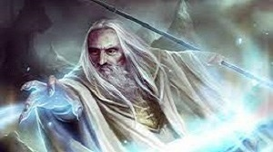
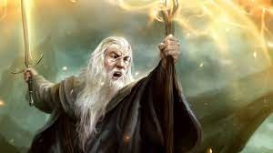
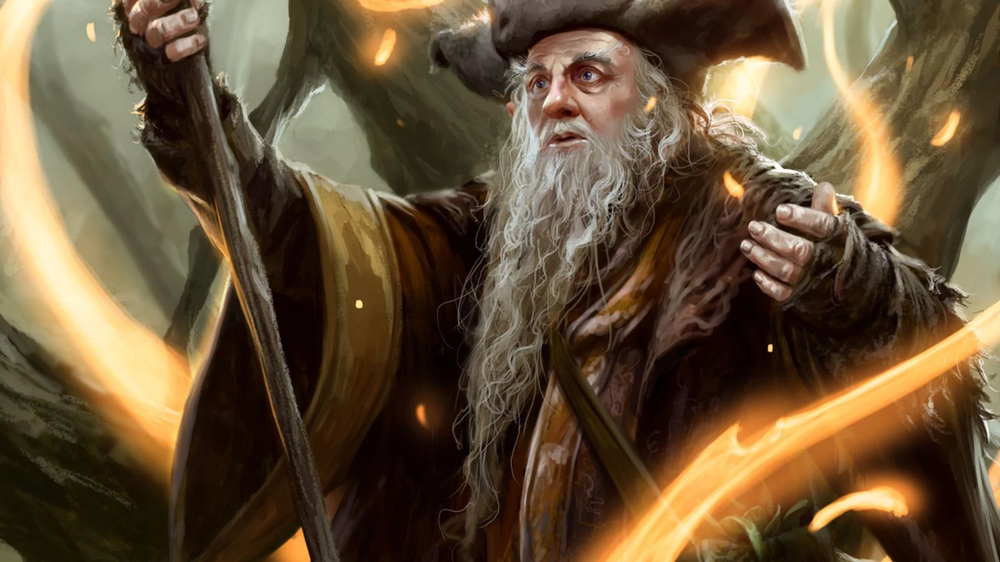
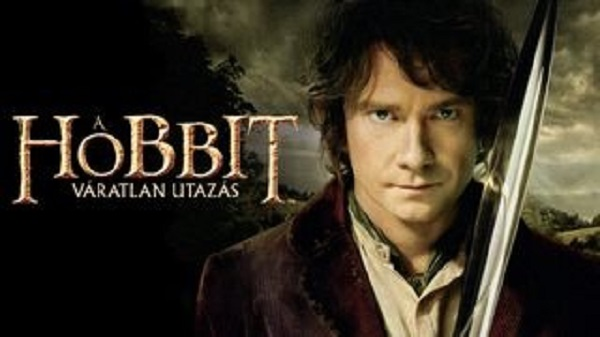
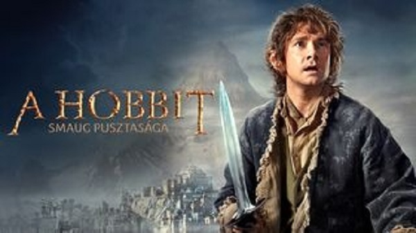
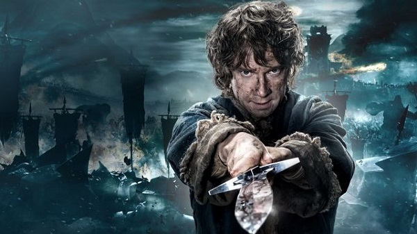
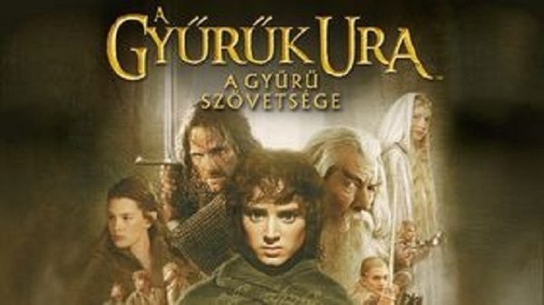
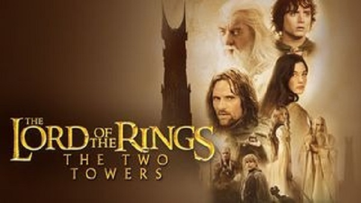
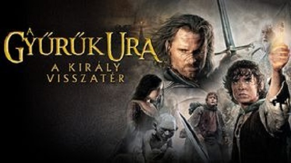

Művei
| Életében kiadott művei | |
|---|---|
| 1937 | A hobbit / A babó |
| 1945 | Pepecs mester falevele |
| 1947 | On Fairy-Stories |
| 1949 | A sonkádi Egyed gazda |
| 1954 | A Gyűrű szövetsége |
| 1954 | A két torony |
| 1955 | A király visszatér |
| 1962 | Bombadil Toma kalandjai és más versek a vörös könyvből |
| 1964 | A gyűrű nyomán – Fa és levél |
| 1967 | A woottoni kovácsmester |
| 1967 | The Road Goes Ever On |
Középfölde mágusai
Bár a valák az Izzó Harag Háborúja után úgy döntöttek, hogy nem avatkoznak be a Világ folyásába többet, azonban mégis úgy látták, hogy Sauron egyre terjedő hatalmát meg kell állítaniuk. Ezért Manwe egy tanácsot hívott össze, ahol arról határoztak, hogy az ainuk közül követeket küldenek Középföldére. Első felszólításra összesen két maia jelentkezett: Curumo (Saruman) és Alatar. Később a valák kifejezett kívánságára a küldetésre még három maiát választottak ki: Pallandót, Aiwendilt (Radagast) és Olórint (Gandalf). Hajóval érkeztek hk. 1000 körül, mikor a nagy Zölderdő homályba borult, és Bakacsinerdő lett belőle.
Középföldére emberi formában küldték őket. Ez nem csak azt jelenti, hogy emberi testük lévén meg kellett ismerniük az éhséget és a szomjúságot, de azt is, hogy csak halványan emlékeztek egykori önmagukra. Bár nagyon lassan öregedtek, már eleve öregemberek képében érkeztek. Bár életük végtelenül hosszú, s szellemi lényként halhatatlanok, földi testük elpusztítható. (Mikor Gandalf a balroggal vívott csata után meghal, maga Ilúvatar kell hogy visszaküldje őt, hogy befejezhesse küldetését.)

Saruman

Gandalf

Radagast
A hobbit

Váratlan utazás
Hatvan évvel járunk A Gyűrűk Ura történetének kezdete előtt. A békésen éldegélő Zsákos Bilbó (Martin Freeman) akaratlan kalandba kényszerül: Szürke Gandalf (Ian McKellen) tűnik elő a semmiből, s szervezi be őt egy váratlan utazásba, melynek során tizenhárom törppel és azok legendás vezetőjével, Tölgypajzsos Thorinnal együtt kell visszakövetelniük az elveszett Törp Királyságot, Erebort a rettegett sárkánytól, Smaugtól. Utazásuk temérdek veszélyes földön át vezet, találkoznak koboldokkal, orkokkal, halálos vargokkal, óriáspókokkal, alakváltókkal és mágusokkal. S noha végső céljuk a keletre fekvő Magányos Hegyet övező sivár vidék, előbb ki kell menekülniük a kobold alagutakból, ahol Bilbó találkozik azzal a lénnyel, aki örökre megváltoztatja az életét - Gollammal. Itt, a földalatti tó partján, egyedül Gollammal, a szerény Bilbó nem csak arra jön rá, hogy bátorsága és furfangja még őt magát is meglepi, egyszersmind megszállottjává válik Gollam "drágaszágának", a titokzatos gyűrűnek, amely kiszámíthatatlan és hasznos tulajdonságokkal bír. Egy kicsiny aranygyűrű, amely egész Középfölde sorsára hatással lesz, és amelyről Bilbó ekkor még semmit sem tud.

Smaug pusztasága
Zsákos Bilbó, a varázsló Gandalf és a Tölgypajzsos Orin vezette tizenhárom törp folytatja útját a Magányos Hegyhez, hogy visszaszerezzék Erebort, a törpök mágikus királyságát, ahol most a gonosz sárkány, Smaug az úr. A Ködhegységen túljutva a Bakacsinerdő felé indulnak, ám Gandalf elválik tőlük. Az erdőben óriáspókok támadják meg őket, majd a törpöket elfogják az erdőtündék, ahonnan Bilbó szabadítja ki őket. Tóvároson keresztül vezet az út a Magányos Hegyhez.

Öt sereg csatája
Zsákos Bilbó és barátai visszahódították otthonukat Smaugtól. A dühös sárkány bosszúból rátámad Tóvárosra. A visszaszerzett kincsektől megrészegült Tölgypajzsos Thorin elárulja a barátait. Eközben Szauron szörnyű tervet forral: orkok seregét indítja útnak a Magányos Hegy ellen. A törpék, tündék és az emberek hamarosan választás elé kerülnek: összefognak vagy elpusztulnak. Bilbo az öt sereg gigászi csatája közepén találja magát, ahol Középfölde sorsa forog kockán. A Hobbit-trilógia befejező része.
A Gyűrűk Ura

A Gyűrű Szövetsége
Frodó (Elijah Wood), az ifjú hobbit egy gyűrűt kap Bilbótól, amiről kiderül, hogy az Egy Gyűrű, mellyel a Sötétség Ura rabszolgasorba taszíthatja Középfölde népeit. Gandalf (Ian McKellen) Völgyzugolyba küldi Frodót, ahol a tündék legbölcsebb vezetője, Elrond dönt a gyűrű sorsáról. Nincs más lehetőség, a gyűrűt el kell pusztítani Mordorban, a Végzet-katlanban. A szabadnépek tanácsán megújul a Szövetség, és Gandalf vezetésével Frodó és társai, a dúnadán Aragorn (Viggo Mortensen), a tünde Legolas (Orlando Bloom), Gimli, a törp (John Rhys-Davies), és Boromir, az emberek képviseletében, nekivágnak a reménytelen küldetésnek. A jövő attól függ, hogyan alakul a szövetség sorsa.

A két torony
Hamarosan eldől Középfölde sorsa: a gonosz ereje egyre nő, mert szövetséget kötött a két torony: Barad-dúr, Szauron, a sötét úr vára és Orthanc, amely Szarumán, az áruló mágus erődje. Frodó, a Gyűrűhordozó és hű barátja, Samu Mordor földje felé tart, hogy a tűzbe hajítsa terhét: ám egy újabb veszéllyel kell szembenézniük - felbukkan Gollam, aki magának követeli a kincset. Eközben a szövetség még élő tagjai a Kósza vezetésével újabb harcokba keverednek. Rohan lovasai mellett küzdenek és különös szövetségesekre lelnek: az Entekre. Árnyék vetül a világra. A Sötét Úr hadseregei Gondor felé vonulnak. Kezdetét veszi a Gyűrűháború.

A király visszatér
Gandalf (Ian McKellen) Pipinnel (Billy Boyd) Gondorba vágtat, hogy Denethort (John Noble) felkészítse Szauron túlerejével szemben. Théoden király (Bernard Hill) összevonja seregeit Gondor segélyhívására. Aragorn (Viggo Mortensen) végül vállalja sorsát, és hű társaival harcba szólítja a hegyek közt élő holtakat. Középfölde sorsa azonban egészen máshol fog eldőlni. Frodó (Elijah Wood) és Samu (Sean Astin) a Hatalom gyűrűjével Mordor sötét útvesztőit járja. De minél közelebb kerülnek a Végzet hegyéhez, Frodót annál jobban húzza a Gyűrű szörnyű súlya. A világ sorsa egy apró hobbit kezében van, aki kétséges, hogy ellen tud állni a legnagyobbakat is legyőző kísértésnek.